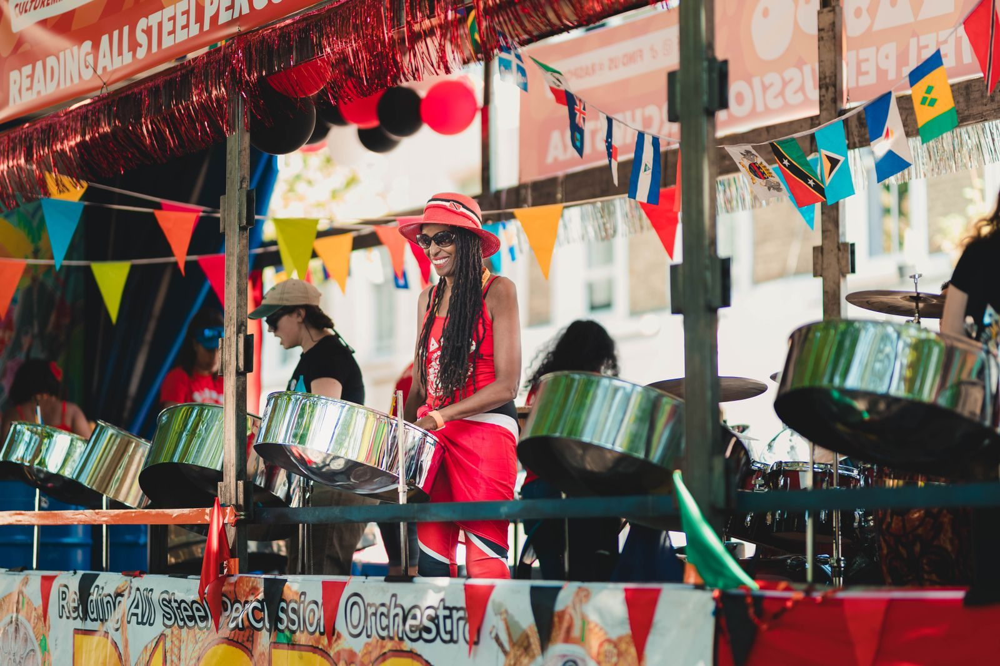

Steelpan · London · Est. register 2007
The band tunes the pans. The player keeps the road.
I play lead tenor and double seconds with Harbourlight Steel Orchestra — carnival road, festival stages, school workshops and solo events. A steelband is a register of voices, each with a true range and a job. This page opens the register: hear what every voice actually covers, then read the fees in print before you book anything.

The signature chart
Every voice, at its true range
Four voices make a steelband. Pick one: the register gives its pans, its range and the logic of its note layout — and every note on the chart can be tapped to hear where it sits. The tones are synthesised in your browser to demonstrate range; they are not recordings of pans, and no sound plays until you tap a note.
Lead tenor
Pans 1 pan Range C4 – E6 Notes 29 notes Job Melody — the tune itself, carried on one panSound ruling, in the open: the trade is sound, and range is teachable — so the chart speaks. Tones are Web Audio synthesis (fundamental + tuned partials), labelled as demonstrations of pitch and register, never as the sound of a real pan. Nothing sounds on page load, on scroll, or on hover — only on a tap, and switching voices silences the last note first.
Register of work offered
What can be booked
Five lines of work, entered the way the band's register enters everything: what it is, the format, how long it runs, and its current status. If a line is what you need, the Book page takes the details.
| Engagement | Format | Duration | Status |
|---|---|---|---|
| Carnival roadNotting Hill & Leeds, with Harbourlight | Full band on racks, moving with the route; I play tenor in the front rank | 2 days, August bank holiday | Booked — returns annually |
| Festival stage setBand or reduced 8-piece | Static stage, full register from bass to tenor; PA lines for the front rank | 45–60 minutes | Booking for 2027 |
| School workshopPrimary & secondary, solo-led | A class set of pans travels with me; pupils learn a real arrangement voice by voice | Half day or full day | Term-time — booking |
| Solo event setReceptions, openings, private parties | One tenor, one player; calypso, standards and requests agreed in advance | Up to 2 hours, with breaks | Booking |
| Recording sessionTenor & double seconds | Studio call; parts read or written by ear, charts welcome either way | Per call — 3 hours | By arrangement |
Table scrolls sideways on small screens — every entry stays in the register.
Fees, in print
What it costs, and what moves it
No quote is hidden behind a phone call. These are the starting figures the band and I actually work from; the right-hand column is the honest list of what changes them.
- Solo tenor setReceptions & private events, up to 2 hoursfrom £320
- Full band stage setHarbourlight, 10–14 players, 45–60 minutesfrom £1,450
- School workshopHalf day, up to 30 pupils, pans provided£240
- School workshop — full dayTwo classes, or one class to performance£420
- Recording sessionPer 3-hour call, tenor & seconds£210
- Travel beyond the M25 — mileage and the van, at cost, agreed before booking.
- How many pans travel — a six-bass set is six drums and a rack; bass work is priced with the load, not by the hour.
- Outdoor cover — pans and rain do not mix (see the rain case on the Engagements page). A covered stage or marquee is a condition outdoors, not an extra.
- A finish after 23:00 — late finishes are charged; the band travels home the same night.
- Short-notice tuning — a blend booked inside two weeks carries the tuner's call-out fee, passed on at cost.
The season, as the register runs it
A pan year
Steelband work is seasonal, and the register plans around it. If your date sits in a full month, write early — the tuning month and carnival month close first.
Every pan in the register goes to the tuner before the season opens. No engagements are taken against untuned pans.
Workshop residencies run with the school term; summer-fair performances are booked by Easter.
Stage sets across the festival season; the reduced 8-piece travels furthest in these months.
Leeds and Notting Hill. The band is on the road and the register is closed to new August work by spring.
Workshops restart; studio calls and album work mostly land here, between terms.
Steelband carol sets for town centres and winter markets — booked by October, every year.